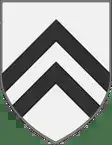
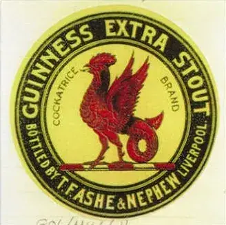
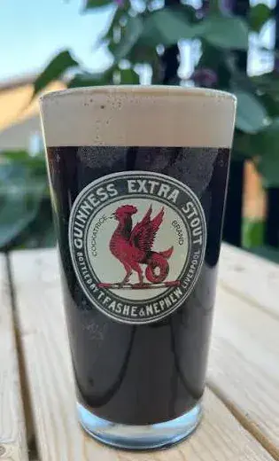

The Ashe Family Coat of Arms: A Cockatrice and a Guinness Connection
A search for the Ashe family coat of arms led to a mythical cockatrice, a Latin motto, Shakespeare, and an unexpected Guinness connection.

Years ago, I started searching online for the Ashe family coat of arms. I expected to find a shield, maybe a motto, and that would be it. Instead, I found a mythical creature I’d never heard of, a reference in Shakespeare, and an unexpected connection to one of my favorite beers: Guinness.
The shield: two black chevronels
The basic design is simple: a silver (or white) shield with two narrow black chevrons. The formal heraldic description is “Argent, two chevronels sable.” In heraldry, argent means silver and sable means black.

It’s the design I kept seeing on coat-of-arms websites—the kind that will happily print your supposed family crest on a mug. But digging into the historical references turned out to be more interesting than buying the mug.
One important distinction I’ve learned since I first wrote this: coats of arms historically belonged to particular people and family lines, not everyone with the same surname. The version I found is listed for the Ashe family of Ashfield, County Meath, Ireland. I haven’t established a genealogical connection between that line and my own.
The motto: Non nobis sed omnibus
The Latin motto translates as “Not for us, but for all.”
Some historical descriptions also put a single word above the shield: “Fight.” Put the two together and you get a reading I like: “Fight, not for us, but for all.” That’s my interpretation of the two inscriptions, rather than a literal translation of one continuous motto.
The cockatrice
The creature at the top of the coat of arms is a cockatrice. I had no idea what that was when I started researching this.
A cockatrice is a mythical creature usually depicted with a rooster’s head and a dragonlike or serpentine body. According to some legends, it could kill with a look.
Apparently, this was a familiar enough creature in Britain that Shakespeare referenced it in Richard III:
A cockatrice hast thou hatch’d to the world,
Whose unavoided eye is murderous.
In heraldic language, this particular Ashe crest is described as a gold cockatrice with a red comb and wattles. The black-and-white drawing doesn’t show those colors, but it does a pretty good job of making the creature look intimidating.
The unexpected Guinness connection
Here’s where the research took an interesting turn.
I came across an old Guinness Extra Stout “Cockatrice Brand” label. There was that familiar creature again—but look closely at the bottom of the label. It says “Bottled by T. F. Ashe & Nephew, Liverpool.”

The label identifies T. F. Ashe & Nephew of Liverpool as the bottler. I haven’t established whether that company was connected to the family associated with this coat of arms, or to my own family. But seeing the Ashe name and that familiar cockatrice on a Guinness label was still a pretty great discovery.

Still an interesting piece of Ashe history
I originally published this research in 2016. Looking back at it now, I think the best part isn’t the claim of having a family coat of arms. It’s how one question led to another: a shield, a Latin motto, a mythical creature, Shakespeare, and finally a Guinness label.
Not a bad outcome for a little curiosity about a last name.
Sources and further reading
- Bernard Burke, The General Armory of England, Scotland, Ireland, and Wales (London, 1884), Supplement, “Ashe (Ashfield, co. Meath)”: arms, cockatrice crest, and the mottoes “Fight” above the shield and “Non nobis sed omnibus” below.
- Fairbairn’s Book of Crests of the Families of Great Britain and Ireland, vol. 1 (1905 edition), p. 21, “Ashe of Ashfield, Ireland”: the cockatrice crest with both mottoes.
- John Burke and John Bernard Burke, Encyclopædia of Heraldry, or General Armory of England, Scotland and Ireland (1851): the related Ashe of Sowton, Devonshire entry, with two chevrons and a cockatrice crest.
- William Shakespeare, Richard III, Act 4, Scene 1, the Duchess of York’s lines.
- Read the original April 2016 article on the Internet Archive.